Figure 1. The Elementary Particles in the Standard Model
by
Orgho Neogi
A thesis submitted in partial fulfillment
of the requirements for the Doctor of Philosophy
degree in Physics & Astronomy in the
Graduate College of
The University of Iowa
May 2024
Thesis Committee: Name of Thesis Supervisor, Jane Nachtman
Yaser Onel
Milind Diwan
Mary Hall Reno
I have yet to see any problem, however complicated, which, when looked at in the right way did not become still more complicated.
Poul Anderson
ABSTRACT
The Deep Underground Neutrino Experiment (DUNE) will address open issues in neutrino physics such as the measurement of the CP-violating phase in neutrino oscillations and the neutrino mass ordering. The 2x2 demonstrator is a single-phase liquid argon time projection chamber (LArTPC), with four modules, operated as a prototype for the DUNE Liquid Argon Near Detector (ND-LAr). Based on the ArgonCube design concept, the 2x2 features a novel pixelated charge readout and advanced high-coverage photon detection system.
Machine learning (specifically the SPINE package) can be used to form a complete reconstruction pipeline of the 2x2 events. This paper will describe the workings on this reconstruction and its current performance.
I have yet to see any problem, however complicated, which, when looked at in the right way did not become still more complicated.
— Poul Anderson
People working in the field of high energy physics have a tendency to concern themselves with attempting to solve problems that are incredibly complicated. So, perhaps, there is a touch of irony that the problem that they are trying to solve is not only incredibly fundamental, but also very simple to state. The question can be boiled down to – what is the stuff in our universe made of? What immediately follows from this fundamental inquiry is - how is matter made up of these things? Or to put it another way, how do the fundamental building blocks interact?
In some sense, particle physics tries to distill matter and the interactions therein down to the smallest possible level to which it can be broken down. Turns out that breaking these concepts down to this elementary level of specificity is an incredibly complicated process of which we have merely begun to scratch the surface. As such, this paper focuses on a tiny fraction of these fundamental building blocks – the elusive neutrino with the hope of just perhaps being able to untangle some of the myriad of secrets that it harbours.
Before the protagonist 1 of our story - the neutrino - can be formally introduced, the stage has to be set. A good candidate to set the stage would be the standard model which describes three of the four known fundamental forces, electromagnetic, weak and strong interactions (it struggles to deal with gravity) and classifying all known elementary particles [1]. Just like any foundational theory that undergirds a sub-field of a subject, the standard model definitely wasn’t developed in a day and as such, there is definite value in becoming familliar with the historical context surrounding the standard model in our quest to understand neutrinos.
One may definitely quibble about where our understanding of the fundamental particles starts from, after all, humans have been trying to find out the nature of our universe and the things that make it up going back as far as the 4th century BCE with Plato positing that everything is made up of 4 elements (water, wind, earth and fire)[2], but I think it makes sense to look at the elementary particles that make up the standard model as we know it today – with the definite understanding that there may very well be physics that lies beyond the realm of the standard model.
At its core, the Standard Model consists of two main categories of particles: fermions, which make up matter, and bosons, which mediate interactions. Fermions have 1∕2 integer spins while bosons have integer spins.
The fermions can be further categorized into quarks and leptons.
Quarks are understood to be fundamental constituents of matter, forming the building blocks of
protons, neutrons, and other hadrons (Composite subatomic particles that are made up of at least 2
quarks). Quarks interact with each other via the strong force.We have so far discovered 6 flavors of quarks
– up ( ), down (
), down ( ), charm (
), charm ( ), strange (
), strange ( ), top (
), top ( ), and bottom (). Each flavor has different
mass. These masses and their interactions with other particles are crucial for the stability and properties of
atomic nuclei.
), and bottom (). Each flavor has different
mass. These masses and their interactions with other particles are crucial for the stability and properties of
atomic nuclei.
| Quark Flavor | Approximate Mass (MeV/c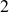) | Charge (e) |
| Up (u) | 2.2 - 3.0 | + |
| Down (d) | 4.7 - 5.0 | - |
| Strange (s) | 95 - 105 | - |
| Charm (c) | 1270 - 1720 | + |
| Bottom (b) | 4180 - 4380 | - |
| Top (t) | 172000 - 173000 | + |
Each type of fermion carries a specific flavor and generation. For instance, the electron (e) belongs to the first generation, while the muon (μ) and tau (τ) belong to the second and third generations, respectively 2.
The interactions between these particles are mediated by gauge bosons, which are the force carriers. The Standard Model includes the following gauge bosons:
| Gauge Bosons: | Photon (A) (mediates electromagnetic force) | (1) |
| W and Z bosons (W±,Z0) (mediates weak force) | (2) | |
| Gluons (g) (mediates strong force) | (3) |
The mathematical framework underpinning the Standard Model is primarily based on gauge theory, specifically the group SU(3)×SU(2)×U(1). Each of these groups corresponds to a different force:
| Strong Interaction: | SU(3) (color charge) | (4) |
| Weak Interaction: | SU(2) (isospin) | (5) |
| Electromagnetic Interaction: | U(1) (hypercharge) | (6) |
The Higgs mechanism, a crucial part of the Standard Model, provides a mass to the W and Z bosons via spontaneous symmetry breaking. The Higgs field ϕ can be represented as:
| ϕ(x) | =  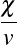 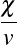 | (7) |
where v is the vacuum expectation value and h(x) is the physical Higgs boson field. The mass terms for the gauge bosons arise when the Higgs field acquires a vacuum expectation value.
Moving on to the other fundamental forces, the combination of electromagnetism and the weak force into one consistent theory was monumental in pushing physics forward.The journey towards electroweak unification began with the discovery of the weak force, a crucial interaction responsible for processes like beta decay. Early experiments revealed that the weak force was much weaker than electromagnetism and had a very short range. It was eventually understood that the weak force and electromagnetism were manifestations of a more fundamental interaction.
In the 1970s, Sheldon Glashow, Abdus Salam, and Steven Weinberg formulated the electroweak theory, which successfully unified these two interactions into a single theoretical framework. Their theory predicted the existence of the W and Z bosons, which mediate the weak force. The electroweak theory is based on the gauge symmetry group SU(2)L×U(1)Y .
The Lagrangian for the electroweak interaction can be written as
| EW | = - WμνiW
iμν- WμνiW
iμν- BμνBμν BμνBμν | (8) |
+ mW 2W
μiWiμ+ mW 2W
μiWiμ+ mZ2Z
μZμ mZ2Z
μZμ | (9) | |
-  | (10) | |
- | (11) | |
-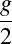 | (12) | |
- | (13) | |
+  | (14) | |
+  . . | (15) |
Where Wμνi represents the field strength tensor for the SU(2)L gauge bosons, Bμν is the field strength tensor for the U(1)Y gauge boson, mW and mZ are the masses of the W and Z bosons respectively, g is the SU(2)L gauge coupling constant, g′ is the U(1)Y gauge coupling constant, ψL and ψR denote the left- and right-handed fermion fields, τi are the Pauli matrices corresponding to the SU(2)L symmetry, Y represents the hypercharge of the fermion fields, and θW is the Weinberg angle.
The electroweak theory successfully predicted the masses of the W and Z bosons, which were experimentally confirmed in 1983 at CERN. The W bosons (W+ and W-) mediate charged current interactions, while the Z boson mediates neutral current interactions.
The path to the electroweak theory was marked by significant experimental and theoretical advances. In the 1930s, the discovery of the muon by Carl Anderson and Seth Neddermeyer introduced the idea that there were particles beyond the electron. Muons were soon identified as heavier cousins of electrons, leading to the development of the concept of lepton family.
In the 1970s, the discovery of the tau lepton, a particle even heavier than the muon, further expanded the lepton family. The tau lepton, discovered by Martin Perl and collaborators in 1975, was crucial in validating the electroweak theory. The existence of three generations of leptons (electron, muon, and tau) and their associated neutrinos was essential for the theory’s development.
The electroweak unification also prompted the search for new particles, such as the Higgs boson, responsible for giving mass to the gauge bosons. The discovery of the Higgs boson at the Large Hadron Collider in 2012 was a triumph for the Standard Model and confirmed the last missing piece of the electroweak theory.
Okay!
The stage has been set!
Time for our stars –the neutrinos– to make an appearence.
The story begins in the 1930s with Wolfgang Pauli, who first proposed the existence of neutrinos to solve a pressing problem in the field of beta decay. He addressed the puzzle of the missing energy in beta decay experiments. Beta decay is a process where a neutron decays into a proton, an electron, and an electron antineutrino:
where  is the neutron,
is the neutron,  is the proton,
is the proton,  is the electron, and is the electron
antineutrino. The problem was that the energy of the emitted beta particle (electron) and the proton did not
add up to the total energy of the decaying neutron, leading to what seemed like a violation of energy
conservation.
is the electron, and is the electron
antineutrino. The problem was that the energy of the emitted beta particle (electron) and the proton did not
add up to the total energy of the decaying neutron, leading to what seemed like a violation of energy
conservation.
To deal with this, Pauli proposed the existence of a new, neutral particle that carried away the missing energy. 3 Fermi incorporated the neutrino into his theory of beta decay, which became known as Fermi’s theory of beta decay. His theory elegantly explained the conservation of energy and angular momentum in beta decay processes.
The neutrino, denoted by 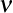, is a nearly massless and electrically neutral particle. The interaction of neutrinos is governed by the weak force
For many years, neutrinos were a theoretical construct until they were finally observed experimentally by Clyde Cowan and Frederick Reines in 1956. Their detection was achieved by capturing neutrinos emitted from a nuclear reactor and observing their interactions with a detector filled with water and cadmium chloride.
The weak interaction is described by the exchange of W and Z bosons, which mediate processes like beta decay.
The 1960s introduced a new chapter with the discovery of the muon neutrino, νμ. The experiment conducted by the Brookhaven National Laboratory used a beam of pions, which decay into muons and muon neutrinos:
| π+ →μ+ +ν μ | (16) |
Here, π+ is the positively charged pion, μ+ is the muon, and νμ is the muon neutrino. In 1962, the collaboration led by Martin LPerl and his team at the Stanford Linear Accelerator Center (SLAC) confirmed the existence of the muon neutrino by observing interactions consistent with νμ.
The next breakthrough in neutrino physics came in 1975 with the discovery of the tau neutrino, ντ. The relevant interaction can be expressed as:
| τ+ →ν τ+ℓ+ | (17) |
where τ+ is the positively charged tau particle, ντ is the tau neutrino, and ℓ+ represents a lepton like a positron. The detection of the tau neutrino was more challenging due to its lower production rates and the complexity of distinguishing it from other neutrinos. These discoveries not only confirmed the existence of the muon and tau neutrinos but also led to the realization of the three-flavor neutrino model in the Standard Model.
In the early days of neutrino physics, the Standard Model treated neutrinos as massless particles but experimentally we know that they have some amount of mass. Just a very tiny amount. Not only do we not really know the masses of the neutrinos, the ordering of their masses is still an open question.
For the mass ordering of neutrinos, we need to delve into the concept of neutrino mass eigenstates and flavor eigenstates. Neutrinos are produced and detected in flavor eigenstates (denoted by νe, νμ, and ντ), but they propagate as mass eigenstates (ν1, ν2, and ν3). The relationship between these states is governed by the PMNS (Pontecorvo-Maki-Nakagawa-Sakata) matrix, which can be written as:
 = =   | (18) |
The mass eigenstates ν1, ν2, and ν3 have different masses, but their exact ordering is not yet definitively known. There are two possible orderings for these masses:
Normal Ordering (NO): In this scenario, the masses of the neutrinos are ordered as
 . This implies that the third eigenstate, ν3, has the highest mass. The mass differences
between these states are described by:
. This implies that the third eigenstate, ν3, has the highest mass. The mass differences
between these states are described by:
| Δm212 | = m22 -m12 | (19) |
| Δm322 | = m32 -m22 | (20) |
| Δm312 | = m32 -m12 | (21) |
Inverted Ordering (IO): Here, the masses are ordered as  . In this case, the lightest
eigenstate is ν3. The corresponding mass differences are:
. In this case, the lightest
eigenstate is ν3. The corresponding mass differences are:
| Δm212 | = m22 -m12 | (22) |
| Δm322 | = m22 -m32 | (23) |
| Δm312 | = m12 -m32 | (24) |
Determining the correct mass ordering is essential for understanding the properties of neutrinos and has profound implications for cosmology and particle physics.
Neutrino oscillation is a quantum phenomenon whereby a neutrino created with a specific lepton flavor can change into another flavor as it propagates through space. This behavior is a direct consequence of the fact that neutrinos have mass and the flavor eigenstates.
The flavor states  () are related to the mass states 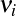 (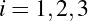) through a
unitary transformation. This transformation can be expressed as:
() are related to the mass states 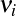 (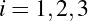) through a
unitary transformation. This transformation can be expressed as:
| |να⟩ | = ∑iUαi|νi⟩, | (25) |
where  are elements of the PMNS matrix, which is a unitary matrix describing the mixing
between the flavor and mass eigenstates.
are elements of the PMNS matrix, which is a unitary matrix describing the mixing
between the flavor and mass eigenstates.
When a neutrino is produced in a flavor eigenstate, it propagates as a superposition of mass
eigenstates. If we denote the neutrino state produced at  as 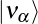, its time evolution in terms of the
mass eigenstates is given by:
as 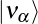, its time evolution in terms of the
mass eigenstates is given by:
| |να(t)⟩ | = ∑iUαie-iEit|ν i⟩, | (26) |
where  is the energy of the mass eigenstate
is the energy of the mass eigenstate  , and
, and  is the time of propagation.
is the time of propagation.
The probability of detecting a neutrino of flavor  after a time
after a time  is given by the squared
modulus of the amplitude:
is given by the squared
modulus of the amplitude:
| P(να →νβ;t) | =  2 2 | (27) |
| = 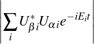2. | (28) |
Assuming the mass differences between the neutrino mass eigenstates are small compared to their
energies, and using the approximation  , we can simplify the expression for the
oscillation probability. The oscillation probability for a two-flavor scenario (
, we can simplify the expression for the
oscillation probability. The oscillation probability for a two-flavor scenario ( and
and  ) is given
by:
) is given
by:
| P(να →νβ;L) | = sin2(2θ)sin2 , , | (29) |
where  is the mixing angle between the two flavors,
is the mixing angle between the two flavors,  is the mass-squared
difference, is the distance traveled by the neutrino, and
is the mass-squared
difference, is the distance traveled by the neutrino, and  is the neutrino’s energy.
is the neutrino’s energy.
To understand the nature of neutrino masses, it is crucial to delve into two different types of neutrinos; Dirac and Majorana. So a new model was required to explain these discrepancies, and in comes Dirac. Dirac, in 1928, extended his theory to include neutrinos, proposing that they were Dirac fermions. According to Dirac’s theory, neutrinos have distinct antiparticles, and their masses arise from the Higgs mechanism, similar to other fermions. In the Dirac framework, the Lagrangian for neutrinos can be written as:
| Dirac | = L(iγμ∂ μ-mν)νL, | (30) |
where  denotes the left-handed neutrino field, its Dirac adjoint, and is the Dirac mass
term.
denotes the left-handed neutrino field, its Dirac adjoint, and is the Dirac mass
term.  and its antiparticle
and its antiparticle  are distinct entities.
are distinct entities.
Then comes Majorana, who proposed in 1937 a different theory to account for neutrino masses. Majorana suggested that neutrinos could be their own antiparticles, which leads to the Majorana condition. In this framework, neutrinos are described by Majorana fermions. The Majorana Lagrangian is given by:
| Majorana | = 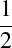Lc(iγμ∂ μ-mν)νL, | (31) |
where is the charge-conjugated field of  . The Majorana mass term explicitly breaks the
lepton number conservation, which is a key difference from the Dirac case. Lepton number
conservation is the principle that the total number of leptons minus antileptons remains constant in a
physical process. Majorana neutrinos are their own antiparticles, and their mass term is of the
form:
. The Majorana mass term explicitly breaks the
lepton number conservation, which is a key difference from the Dirac case. Lepton number
conservation is the principle that the total number of leptons minus antileptons remains constant in a
physical process. Majorana neutrinos are their own antiparticles, and their mass term is of the
form:
| Majorana mass | = - mν(νLT Cν
L), mν(νLT Cν
L), | (32) |
where is the charge-conjugation matrix.
The actual nature of neutrino masses—whether Dirac or Majorana—has significant implications for our understanding of fundamental particles and the symmetries of the universe.
The detection of neutrinos is a crucial aspect of understanding nuclear reactions and the fundamental structure of matter. The discovery of neutrino oscillations not only confirmed that neutrinos have mass but also opened up new avenues for research, such as the precise determination of the neutrino mass spectrum and the investigation of the potential for CP violation in the lepton sector. Ongoing research aims to further understand their properties, including their masses, their role in the universe’s matter-antimatter asymmetry, and potential new physics beyond the Standard Model.
In order to study them experimentally, we have to actually be able to detect them – a task made complicated by the fact that neutrinos only interact with the weak force. Trillions of neutrinos go through us humans every second and we don’t notice because they don’t really interact with us, instead passing right through.
Just as there are many ways to skin a cat, neutrinos can be detected using a number of detector technologies. Each method harnesses different physical principles and technological advancements to observe these elusive particles.
Cherenkov detectors exploit the phenomenon of Cherenkov radiation, which occurs when a neutrino interacts with a medium at speeds greater than the speed of light in that medium. This results in the emission of a faint blue light, which can be detected and analyzed.
The Super-Kamiokande detector in Japan uses a large tank filled with ultra-pure water. It contains thousands of photomultiplier tubes that detect the Cherenkov radiation produced when neutrinos interact with the water.
Water Cherenkov detectors are a type of Cherenkov detector specifically utilizing water as the detection medium. These detectors are characterized by their large volumes of water and arrays of photomultiplier tubes (PMTs) arranged around the tank.
The IceCube Neutrino Observatory at the South Pole uses a cubic-kilometer array of detectors embedded in the Antarctic ice, capturing Cherenkov radiation from high-energy neutrinos.
Scintillation detectors use materials that emit light when excited by the passage of a high-energy particle. Neutrinos interact with a scintillator material, causing it to emit flashes of light, which are then detected by photodetectors.
The NOVA detector utilizes a liquid scintillator to detect neutrinos over long baselines, aiding in the study of neutrino oscillations.
Radio detectors capture the radio waves emitted by neutrino interactions in ice or other materials. This method is particularly useful for very high-energy neutrinos.
The ANITA (Antarctic Impulse Transient Antenna) experiment detects high-energy neutrinos via the radio waves produced by neutrino interactions with the Antarctic ice.
Liquid Argon Time Projection Chambers (LArTPCs) use liquid argon as both the detector material and the medium for drift electrons generated by neutrino interactions. The drifted electrons are then collected and analyzed to reconstruct the interaction.
The spatial resolution in LArTPCs depends on the drift length  , drift field , and the electron
mobility
, drift field , and the electron
mobility  .
.
The DUNE (Deep Underground Neutrino Experiment) will use LArTPCs to study neutrino properties with high precision, particularly in the context of long-baseline neutrino oscillation experiments.
DUNE is a groundbreaking experiment designed to investigate neutrino properties by utilizing an innovative approach involving a large detector placed deep underground. The primary goal of DUNE is to study neutrino oscillations DUNE’s experimental setup involves a neutrino beam generated from a high-intensity proton accelerator at Fermilab in Illinois. The beam travels through the Earth to a massive detector located approximately 1,300 kilometers away, deep underground at the Sanford Underground Research Facility (SURF) in South Dakota. The large scale of the detectors allows for the precise measurement of neutrino interactions, and its underground location minimizes interference from cosmic rays, thus improving the sensitivity of the experiment.
The plan is to have 2 sets of detectors, one at Fermilab, (near detector(ND)) and the other at SURF (far detector (FD)). The design of the DUNE far detector, grounded in cutting-edge Liquid Argon Time Projection Chamber (LArTPC) technology, is set to revolutionize particle physics. This detector will be housed in a colossal volume of 70 kilotons of liquid argon, buried 1.5 kilometers underground. To maximize the efficiency of physics experiments, the design splits this volume into four LArTPC modules, each with a usable ”fiducial volume” of 10 kilotons, avoiding interactions near the edges. To accommodate these massive detectors, approximately 800,000 tons of rock will be excavated, creating vast underground caverns.
The near detector will be built on the Argon cube concept. The ND will have a modular design combined with a novel pixellated charge readout. Previously, large detectors struggled with high demands for drift potentials and argon purity, which often led to risks of electric breakdown and purity losses. By breaking down a large detector into smaller, independent modules, these risks are significantly reduced. This modularity allows for easier maintenance and more reliable operation.
The fully pixelated charge readout adds another layer of sophistication, enabling precise event topology reconstruction. This is important for handling high-multiplicity environments where pile-up could otherwise obscure important data. Additionally, each module captures scintillation light to provide accurate timing information for neutrino events, further enhancing the detector’s performance.
The real game-changer is the scalability of this design. The modular approach means that the detector can be expanded to accommodate a very large active mass, opening up new possibilities for research and application.
Because of the novelty of the technology, a scaled down prototype of the Argon cube detector called the 2×2 has been built. Instead of having 5×7 modules, it will have2×2 modules. Individual modules have already been built and tested before being put together to take data as part of a set.
The scale of DUNE and its ambitious goals are reminiscent of the dramatic shifts in scientific paradigms brought about by the discovery of subatomic particles that challenged existing theories.
When looking at artificial intelligence (AI), everything falls on a spectrum from easily explainable to being a black box when thinking about how the machine makes it’s decisions. On the easily explainable side of things, we have things like decision trees.
A decision tree is where we sort the data by asking a sequence of questions and following the flowchart down to where it leads. By the time we are at the bottom of the tree and have classified the data we can say exactly how the model does it’s classification. For instance if a decision tree is used for mortgage decisions and the model says no, we can query and learn that it said no because you had too low income or too low credit score for instance.
By contrast, a machine learning model like a neural net is almost a black box with regards to how the decisions are made. We can query the model and ask it what it made its decisions based on, however, the features it picks out often isn’t decipherable to humans in any way. As in the previous example, if the answer to a mortgage is no, we have no real idea why the model made that decision. That being said, neural networks are often able to come up with better outcomes for classification that simple models like decision trees are. In the mortgage example, even if the neural net can’t tell us how it comes to the conclusion of approving a loan, it is still more likely to be able to better tell who will be a good credit risk compared to the decision tree. That’s often the trade off that we make when deciding on a more opaque model. That’s why even though they are opaque in how they come up with their answers we still rely on them so heavily. Because we can empirically test through monte-carlo studies how well they perform both in term of efficiency as well as how often these models misidentify the data that we are throwing at it.
While a neural network is opaque about how the decisions are made, the model itself doesn’t have to be a black box for us. We can take a peek under the hood and see how these models work. To do so, we start up from the basic models like a perceptron and work our way to a graph neural network, finally connecting it to how neutrino reconstruction works.
A lot of things that seem incredibly easy to humans – such as recognizing the difference between say a cat and a dog – are very difficult for computers to do. What makes it difficult to make that sort of classification is that it is hard for humans to define concrete rules about what makes the picture of a cat different than the picture of a dog. Neural nets approach this in a completely different fashion.
Instead of trying to define rules about the features that differentiate the picture of a dog vs a cat, we instead classify a whole bunch of pictures by hand. 4 Then throw those pictures at the algorithm with the correct answers and over time the computer learns to tell the difference between that of a dog and a cat. We call an algorithm like this that separates things into two piles a binary classifier. There are many different kinds of binary classifiers with a whole host of advantages and disadvantages but we will start with one that is simple to understand; the perceptron.
A perceptron takes a number of inputs that are binary in nature and produce a single binary output ie.is this a dog? The figure 9 has 3 inputs (x1, x2 and x3) although, more or fewer inputs may be used. Each input then is given a weight – w1, w2 and w3 in this case – and the output calculated thus.
| y = | (33) |
Used in this fashion, a perceptron can only make simple choices. Raising the threshold makes the classification tighter while lowering it loosens the classification. Because the output of a perceptron is binary, for more subtle distinctions, we can use the output of a perceptron to feed into the input of the next one thus creating a network that is more able to measure subtlety.
Varying the weights of the inputs in combination with the threshold for the output allows us to get different models of classification. The neurons in the first layer are only able to make simple decisions based on the raw input but because we use their output as the input to the second layer, the second layer can make more abstract decisions with a degree of subtlety impossible not only with one perceptron but also with even a single layer of perceptrons. The complexity of the discrimination by the classifier increasing with both the number and layers of perceptrons in the network.
With the correct weights and threshold values, we can get any binary classifier we want using a set of perceptrons. That, however, puts us back at our original problem of classifying whether something is a dog; namely, if we knew what features to look for (i.e. what weights and threshold to use) it wouldn’t be hard explaining to a computer what a dog was. The true innovation comes with using learning algorithms that don’t require input from the programmer to set these weights and thresholds.
If we want to use algorithms that can adjust weights and thresholds (otherwise called biases) automatically, we need some method where a small change in the weight only causes a small change in the output. Because perceptrons are binary, this is impossible to do with only perceptrons.
A small change in the weight to an input to the perceptron can flip the output entirely. While this small change in weight can make one of the outputs of the network better, it may also affect the rest of the network behave in unpredictable ways. Going back to the dog and cat example, while changing the weight slightly may make it better at recognizing dogs, it may wreak havoc on how cats are identified.
This is where sigmoid neurons come in.
While perceptrons are effectively step functions, flipping from 0 to 1, sigmoids are more smoothed out. This means that a small change in the weight can lead to a small change in output. The sigmoid function can be written as
| σ = | (34) |
This means that a sigmoid neuron can be written as
| (35) |
where the b stands for the bias of every input. While this looks different than the perceptron at first glance it is just a more smoothed out version of it. One key thing that we lose with the introduction of sigmoids is the linearity that perceptrons afforded us. What we gain is the ability for our programs to automatically adjust their weights and biases because a small change in weights does lead to small change in output as shown in equation 36.
| Δy ≈∑iΔwi+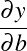Δb | (36) |
More than the exact formula of the sigmoid neuron what matters is the shape. As a result, other neurons can be used in it’s stead which retain the property of having a small change in weight lead to a small change in output. Some of the more popular of these functions (called activation functions) are RELU and softmax. Each have their own advantages and disadvantages and may even be mixed in the same neural network
One drawback of the sigmoid function is that its gradients can become very small for large positive or negative inputs, leading to the vanishing gradient problem during backpropagation. Backpropagation is an optimization algorithm used to minimize the error of neural networks by calculating the gradient of the loss function with respect to each weight through the chain rule and updating the weights accordingly.
The hyperbolic tangent function is another activation function that provides output values between -1 and 1. It is defined as:
| tanh(z) = 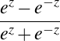 | (37) |
In a neural network, a neuron with the tanh activation function computes:
| tanh(∑iwixi+b) = 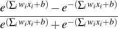 | (38) |
The tanh function is zero-centered, which helps in making the learning process faster and more efficient compared to the sigmoid function. It also suffers from the vanishing gradient problem, though it generally performs better in practice than sigmoid.
The Rectified Linear Unit (ReLU) is a widely used activation function in deep learning models. It is defined as:
| ReLU(z) = max(0,z) | (39) |
For a neuron using ReLU, the output is computed as:
| ReLU(∑iwixi+b) = max(0,∑iwixi+b) | (40) |
ReLU introduces non-linearity while being computationally efficient. It helps mitigate the vanishing gradient problem by allowing gradients to flow more easily through the network. However, it suffers from the ”dying ReLU” problem where neurons can sometimes become inactive and only output zero.
To address the dying ReLU problem, the Leaky ReLU function introduces a small, non-zero gradient for negative inputs. It is defined as:
| Leaky ReLU(z) = | (41) |
where  is a small constant (e.g., 0.01).
is a small constant (e.g., 0.01).
For a neuron using Leaky ReLU, the output is:
Leaky ReLU(∑iwixi+b) =  | (42) |
The Exponential Linear Unit (ELU) is designed to combine the benefits of ReLU and Leaky ReLU while addressing their limitations. It is defined as:
| ELU(z) = | (43) |
where  is a positive constant.
is a positive constant.
For a neuron using ELU, the output is:
ELU(∑iwixi+b) =  | (44) |
ELU can help speed up learning and improve robustness to noise by reducing the impact of vanishing gradients.
A number of these sigmoid neurons (or neurons with other activation functions) can be strung together to make a neural network. Each neural network has 3 main parts.
First, we have an input layer. This is all the inputs that go into a neural network and is usually represented as a vector. Each input adds one to the dimension of the input vector. Even something like a 2d picture can have its rows stitched together to make one long vector of inputs.
The middle bits are called the hidden layer, not for any profound reason, but just to distinguish them from the input and output layers. You can have as many hidden middle layers as you want in the network. The trade off is usually one of efficiency and accuracy. The more hidden layers you have, the more accurate the output will bebut at the cost of requiring more time to train because there are more weights to get right. After a point, adding more layers does not improve accuracy in meaningful way while still taking longer to train. This makes creating a good neural net less of a hard science and more of an art form.
Finally, we have the output layer. This layer usually has one neuron for each thing the classifier can bin the input into. In the dog and cat case, we would have 2 output neurons, one that signifies dog and the other cat. However, the neurons won’t directly tell us whether the picture contains a dog or a cat but rather give us two values. One of these values indicates how likely it is for this picture to contain a cat and the other represents the likelyhood that the picture contains a dog. After that, it is still up to us to decide on cutoff values to determine whether we will say the picture contains a cat, a dog, both or neither.
So far we’ve talked about the fact that weights and biases can be adjusted and that it only works if a small change creates only a small change in output while glossing over how exactly the computer automatically calculates these weights. Time to peel back that layer! 5 We use a technique called gradient descent.
To start off, we need a set of inputs x where we already know the answers y. This is called the training dataset. Once the weights and biases are adjusted we can then use the model to query a set of inputs that we don’t know and be reasonably certain that it won’t give us garbage outputs. To do this adjustment, we need to define a cost function.
| C(w,b) = ∑x||y(x)-a||2 | (45) |
Where n is the number of training samples and a is the vector of outputs from the network. We want a set of weights that make the cost as small as possible and we can do that through a method called gradient descent. The function described here is not the only cost function possible but is a simple one to start with. To use gradient descent, we can do
| Δv = -η∇C | (46) |
where v is the set of weights and biases and η is the learning rate. The more aggressive we set η the quicker training will go, but it may end up actually increasing the cost function. So we want an η that is small but not too small.
Convolutional Neural Networks (CNNs) are a specialized class of neural networks designed for processing data with grid-like topology, such as images. They are particularly effective for image classification and object detection due to their ability to capture spatial hierarchies in data. A CNN typically consists of several key layers: convolutional layers, activation layers, pooling layers, and fully connected layers. Let’s break down each layer and its role in the network.
Convolutional Layer
The convolutional layer is the cornerstone of a CNN. It applies a set of filters (or kernels) to the input image to produce feature maps. Each filter is a small matrix that slides over the input image to compute a dot product.
Given an input image  of size
of size  (height
(height  and width
and width  ) and a filter 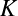 of size
) and a filter 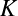 of size
 (height 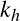 and width ), the output feature map
(height 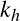 and width ), the output feature map  can be computed using the convolution
operation:
can be computed using the convolution
operation:
| O(i,j) | = ∑m=0kh-1∑ n=0kw-1I(i+m,j+n)⋅K(m,n) | (47) |
| = (I *K)(i,j) | (48) |
where 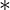 denotes the convolution operation. The dimensions of the output feature map depend
on the stride  and padding
and padding  . If we use zero-padding and stride
. If we use zero-padding and stride  , the dimensions
are:
, the dimensions
are:
| Hout | =  +1 +1 | (49) |
| Wout | =  +1 +1 | (50) |
Activation Layer
The Rectified Linear Unit (ReLU) is one of the most commonly used activation functions in CNNs.
This activation function helps in mitigating the vanishing gradient problem and speeds up training.
Pooling Layer
The pooling layer reduces the spatial dimensions of the feature map, which helps in reducing
computational complexity and preventing overfitting. The most common pooling operation is max
pooling. For a pooling window of size  and stride
and stride  , the max pooling operation is defined
as:
, the max pooling operation is defined
as:
| Opool(i,j) | = maxm∈[i:i+ph],n∈[j:j+pw]OReLU(m,n) | (51) |
where  is the feature map after applying the ReLU activation. Pooling reduces the
dimensions of the feature map:
is the feature map after applying the ReLU activation. Pooling reduces the
dimensions of the feature map:
| Hout | =  +1 +1 | (52) |
| Wout | = +1 | (53) |
Fully Connected Layer
The fully connected layer (FC layer) is typically used at the end of the network to produce the final classification results. It connects every neuron in the previous layer to every neuron in the current layer. The output of a fully connected layer is computed as:
| zj | = ∑i=1Nw ijxi+bj | (54) |
where 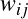 are the weights,  are the inputs from the previous layer, and
are the inputs from the previous layer, and  is the bias. This
results in a vector of size equal to the number of classes, which can be fed into a softmax function for
classification:
is the bias. This
results in a vector of size equal to the number of classes, which can be fed into a softmax function for
classification:
| Softmax(zj) | =  | (55) |
These layers work together to learn hierarchical features from raw data, making CNNs highly effective for various image processing tasks.
Graph Neural Networks (GNNs) extend neural network methodologies to handle data represented in the form of graphs. GNNs are designed to work with the complex, non-Euclidean structure of graphs. Graphs consist of nodes (or vertices) and edges (connections between nodes), and GNNs leverage these structures to learn representations of nodes and their relationships.
To understand how GNNs function, it’s important to break down their key components: node features, edge features, and the message-passing mechanism.
In a graph, each node can have associated features, which are typically represented as vectors. If
we denote the feature vector of node  as
as  , then the node features for all nodes in the
graph can be organized into a matrix , where each row corresponds to a node’s feature
vector.
, then the node features for all nodes in the
graph can be organized into a matrix , where each row corresponds to a node’s feature
vector.
Similarly, edges in a graph can also have features. For an edge connecting nodes and  , we
denote the edge features as
, we
denote the edge features as  . These features can be organized into an edge feature matrix
. These features can be organized into an edge feature matrix
 .
.
The core idea of GNNs is the message-passing mechanism, which allows nodes to aggregate information from their neighbors. This process involves the following steps:
Message Computation: For each node  , we compute messages from its neighboring nodes
, we compute messages from its neighboring nodes
 . The message
. The message  from node
from node  to node
to node  is typically computed using a function
is typically computed using a function
 , which can depend on the features of both nodes and the edge between them:
, which can depend on the features of both nodes and the edge between them:
| muv | = ϕ(hu,hv,euv) | (56) |
| = ϕ(hu,euv) | (57) |
Aggregation: After computing the messages, each node aggregates the messages from its
neighbors. The aggregation function  could be a sum, mean, or a more complex
operation:
could be a sum, mean, or a more complex
operation:
| mv | = AGGu∈ (v)muv (v)muv | (58) |
Update: The aggregated message is then used to update the node’s feature vector. This update
function  often involves a neural network layer like a fully connected layer or a more
complex function:
often involves a neural network layer like a fully connected layer or a more
complex function:
| hv′ | = UPDATE(hv,mv) | (59) |
The updated feature vector represents the new state of the node after considering its neighbors.
Different GNN architectures can use various choices for the aggregation and update functions.
Graph Neural Networks allow for the processing of graph-structured data by iteratively updating node features through message passing. This approach allows GNNs to capture complex relationships between nodes and learn meaningful representations that are useful for various tasks such as node classification and graph classification.
Developing a neural net isn’t just about figuring out the neurons for the network and adjusting the weights. The task of making a neural net can be broken up into 3 main parts.
The first step of any kind of model development is looking at both what kind of data is available as well as what kind of input we might want to make on the model. The data may be scattered about in many places and often will require processing before it can be vectorized.
In the context of neutrino reconstruction, this may require running monte carlo simulations with standard software e.g. (LArSoft, NDsim) and then taking the output from those simulations, processing it into standard images that libraries like pytorch or tensorflow can take as input. It is also important to think about standardizing the size of those images and thinking about how to toss out the sheer amount of data that has no hits in it because neutrino events are so sparse.
Once that has been done, we can look at actually implementing a neural network based on that data. This involves setting out training pipelines which will determine how the data flows, as well as figuring out the structure of the network that will be made. Tests also have to be written for the network so that it can be deployed robustly. Once the training with the training dataset is complete, the model has to be validated with a validation dataset. The validation set will also be a set where the answers are previously known so we can see how well the model performs on data that it hasn’t previously been run on.
Once the model has been validated, it can finally be deployed for real world data where we don’t have the answers. This is the inference part of the model lifecycle.
There are two parts where a model can be optimized. The first is the training phase. Models can take a long time to train even if a lot of data is available which means it is often worth it to optimize the training phase. This sort of optimization is called hyperparameter optimization because the actual hyperparameters (weights and biases) aren’t being tweaked but rather the parameters that guide how they are formed. It involves manipulating the structure of the network as well as changing factors such as the learning rate. The difference between a naive implementation and an optimized one may lead to a speedup of hours for the training.
Training isn’t however what a network is spending most of its time doing. Most of the time a network is used to query for answers, i.e. inference. Inference speedups can be done through a number of ways such as using more specialized hardware like FPGA’s or working with TensorRT optimization. That can bring down the time it takes to query the model for information which can vastly affect number of events being processed in any time period thus increasing throughput.
When working with LArTPC detectors, fundamentally, all it returns is a series of voltages that have been read out to the readout chips. To get to a physics object from just a number of voltages, a lot of work has to be done. This process of converting from raw hits 6 to physics objects is called reconstruction.
There are a number of algorithims to do reconstruction of events, oftentimes with their own idiosyncracies, advantages and disadvantages. The Scalable Particle Imaging with Neural Embeddings (SPINE) package is one that uses machine learning to perform this reconstruction.
The SPINE package is designed to work with LArTPC detectors with pixellated charge readout planes. Traditionally, LArTPC detectors have used wire planes. These generate a series of 2D pictures rather than a native 3D image that is generated by a pixellated readout plane. 7 The modules that are going to be part of the 2×2 prototype have pixellated planes, so we are good to use SPINE here.
We start with a root file produced either by simulation or with real LArTPC data. That then gets run through LArCV which is a C++ library to process LArTPC images. LArCV processes the root files into what is called a sparse 3D input; just a list of coordinates that correspond to non-zero voxels (3d pixels)
After that, we can engage SPINE proper.
SPINE consists of a number of machine learning models stitched together, workingin concert to get from raw hits to reconstructed outputs. Let’s break down each of the parts in turn.
The first thing to handle is semantic segmentation; all that means is voxel wise classification. For this purpose, we use a very popular CNN model called UResNet. This model integrates the U-Net architecture, originally designed for biomedical image segmentation, with residual learning principles introduced by ResNet. By incorporating residual blocks into the U-Net framework, UResNet addresses the vanishing gradient problem and enhances feature learning across different layers of the network. This integration is achieved through skip connections between the encoder and decoder paths, which facilitate the flow of high-level features and spatial information, thus improving the accuracy of segmentation in complex image datasets.
The semantic segmentation reconstruction is supposed to take the raw voxels and classify them into one of 5 or 6 categories based on whether ghost points are included in the dataset.
Electromagnetic showers (e.g. electrons, photons = gammas)
Track-like particles (e.g. muons, protons, pions)
Delta rays (electrons knocked off from hard scattering)
Michel electrons (coming from muon decay)
Low energy depositions
if enabled) Ghost points
Since the 2×2 has a pixellated readout plane, we don’t have to worry about ghost points in this case.
The other part of this step is the point proposal network (PPN). This is just 3 layers attached to the UResNet model. The job of the PPN is to pick out points of interest; namely the start of a shower, the start of a track and the end of a track.
The performance of this stage can be seen in figure 23.
Figure 23 is a confusion matrix. It has numbers that indicate how often the model is getting the right answers. The rows are predictions while the columns are the label from the simulation.
The full SPINE pipeline was trained on a Set of 400k (train) + 100k (validation) 2x2 simulated images. Isotropic particle bombs (ν-like)overlayed with isotropic particles (rock-like) So the performance numbers reflect this training environment.
Once the semantic segmentation is done, their results get passed onto the spice GNN. The purpose of this GNN is to group different voxels together if they belong to the same shower or track. The SPICE (Sparsity-preserving Invariant Convolutional Embedding) model is a novel approach designed to address challenges in graph-based learning by leveraging sparsity and invariance principles. At its core, SPICE utilizes convolutional operations that preserve the structural sparsity of graphs, which is crucial for efficiently processing large-scale and complex graph data. Lucky for us, neutrino events are incredibly sparse. By maintaining sparsity, SPICE reduces computational overhead and memory usage, making it scalable to larger graphs. The invariant convolutional embeddings produced by SPICE ensure that the model is robust to transformations and perturbations in graph structures, such as node and edge additions or deletions, thereby enhancing its generalization capabilities.
In practical terms, SPICE integrates several advanced techniques to optimize graph learning tasks. The model incorporates a sparse convolutional layer that operates directly on the non-zero elements of graph adjacency matrices, bypassing the need for dense matrix operations that can be computationally expensive. Additionally, SPICE applies invariant transformations that allow the network to remain effective even when the graph undergoes structural changes.
This clustering is done in separate parts between the tracks and showers before coming together to cluster interactions.
Due to the modular nature of the 2×2 prototype , there can be quite large gaps between 2 parts of the same track or in the middle of a shower where the modules switch over making the job of clustering more difficult than it would be in a monolithic detector.
Now that things are clustered properly, we move on to do particle identification like in figure 26.
This is done through the Graph Partitioning and Aggregation (GrapPa GNN.GrapPa innovates by combining partitioning and aggregation techniques to handle massive graphs efficiently. It first partitions the input graph into smaller, manageable subgraphs, ensuring that computational resources are allocated more effectively. These partitions are then processed independently through GNN layers, which helps in capturing local graph structures without overwhelming the system’s memory. The aggregation step combines the results from these subgraphs, allowing the model to capture global dependencies and maintain a comprehensive understanding of the entire graph’s topology. This approach strikes a balance between efficiency and expressiveness, making it particularly useful for applications with large and complex graph data.
The GrapPa framework also integrates advanced techniques such as hierarchical pooling and dynamic batching to further enhance its scalability and performance. Hierarchical pooling enables the model to learn and propagate information across different levels of graph granularity, while dynamic batching adjusts the processing load according to the current computational demands. These features contribute to GrapPa’s ability to generalize well across various graph sizes and structures, addressing key limitations of traditional GNNs which often struggle with scalability and efficiency.
GrapPa tries not only to identify the individual particles but also runs a binary classifier to see if the particle is a primary or secondary.
I believe it is highly unlikely that DUNE will gather reasonable amounts of data that a physics analysis can be performed on in the next couple of years. So, I wish to take a look at data that has already been gathered at NOVA. The hope is to extend the analysis that Sarah Choate is working on that tries to detect the anomolous magnetic moment of a neutrino. 8 It entails looking for a low energy final state electron. Currently there is a CNN that has been trained to identify electrons, but that was trained on standard model data and has difficulty distinguishing between Michel electrons and the final state electrons that result from the hypothetical coupling of the muon neutrino to a photon.
I believe the work done on DUNE on machine learning based reconstruction leaves me in a good position to work on the problem of improving reconstruction at the low energy regime for NOVA despite it being a scintillator based detector rather than a LArTPC. With improved reconstruction, the analysis performed in the 0.5GeV should lead to a more precise result.
[1] R. Oerter. The Theory of Almost Everything: The Standard Model, the Unsung Triumph of Modern Physics. Penguin Publishing Group, 2006.
[2] Plato John Warrington. Tmaeus - Plato ; edited and translated with an introduction by John Warrington. Dent ; Dutton, 1965.
[3] Harold Hartley. John dalton, f.r.s. (1766-1844) and the atomic theory-a lecture to commemorate his bicentenary. Proceedings of the Royal Society of London. Series B, Biological Sciences, 168(1013):335–359, 1967.
[4] J. J. Thomson. The electron. The Scientific Monthly, 20(2):113–115, 1925.
[5] B. Pullman. The Atom in the History of Human Thought. Oxford University Press, 1998.
[6] J. J. Thomson. Cathode rays. The London, Edinburgh, and Dublin Philosophical Magazine and Journal of Science, 44(269):293–316, Oct 1897.
[7] T. E. THORPE. On the relation between the molecular weights of substances and their specific gravities when in the liquid state. Nature, 22(560):262–263, Jul 1880.
[8] J. J. Thomson. The corpuscular theory of matter by J.J. Thomson . A. Constable, 1907.
[10] Hantaro Nagaoka. The inductance coefficients of solenoids. Journal of the College of Science, 1909.
[11] Gary G. Tibbetts. How the great scientists reasoned the scientific method in action. Elsevier Science & Technology Books, 2012.
[12] Alexander Belyaev and Douglas Ross. The basics of nuclear and particle physics. Springer, 2021.
[13] Michael F. L’Annunziata. Chapter 20 - the atomic nucleus. In Michael F. L’Annunziata, editor, Radioactivity (Second Edition), pages 679–728. Elsevier, Boston, second edition edition, 2016.
[14] Wikimedia Commons. File:geiger-marsden experiment expectation and result.svg — wikimedia commons, the free media repository, 2024.
[15] C. Baily. Early atomic models – from mechanical to quantum (1904–1913) - the european physical journal h, Oct 2012.
[16] E. Rutherford. Lxxix. the scattering of α and β particles by matter and the structure of the atom. The London, Edinburgh, and Dublin Philosophical Magazine and Journal of Science, 21(125):669–688, May 1911.
[18] Andrey Kopot. Flaws in rutherford’s model of the atom, Feb 2014.
[19] N. Bohr. I. on the constitution of atoms and molecules. The London, Edinburgh, and Dublin Philosophical Magazine and Journal of Science, 26(151):1–25, Jul 1913.
[20] Isaac Newton. A new theory of light and colors, 1672. Readings in the history of psychology., page 44–54, 1948.
[22] Robert Hooke. Micrographia: Or, some physiological descriptions of minute bodies made by magnifying glasses. with observations and inquiries thereupon. Printed for John Martyn, printer to the Royal Society, 1667.
[23] C. Huygens. Traite de la lumiere. Où sont expliquées les causes de ce qui luy arrive dans la reflexion, & dans la refraction. Et particulierment dans l’etrange refraction du cristal d’Islande, par C.H.D.Z. Avec un Discours de la cause de la pesanteur. chez Pierre Vander Aa marchand libraire, 1690.
[24] Thomas Young. The bakerian lecture. experiments and calculations relative to physical optics. Philosophical Transactions of the Royal Society of London, 94:1–16, Dec 1804.
[26] Max Planck. Ueber das gesetz der energieverteilung im normalspectrum. Annalen der Physik, 309(3):553–563, Jan 1901.
[27] A. Einstein. Über einen die erzeugung und verwandlung des lichtes betreffenden heuristischen gesichtspunkt. Annalen der Physik, 322(6):132–148, Jan 1905.
[28] A. Einstein. Zur elektrodynamik bewegter körper. Annalen der Physik, 322(10):891–921, Jan 1905.
[29] GILBERT N. LEWIS. The conservation of photons. Nature, 118(2981):874–875, Dec 1926.
[30] R. A. Millikan. A direct determination of h. Physical Review, 4(1):73–75, Jul 1914.
[31] W. Heisenberg. Ber den anschaulichen inhalt der quantentheoretischen kinematik und mechanik. Zeitschrift fur Physik, 43(3–4):172–198, Mar 1927.
[32] W. Heisenberg. Physics and Beyond: Encounters and Conversations. Harper Torchbooks. Harper & Row, 1971.
[33] Louis De Broglie. Recherches sur la théorie des quanta. Annales de Physique, 10(3):22–128, 1925.
[34] C. Davisson and L. H. Germer. The scattering of electrons by a single crystal of nickel. Nature, 119(2998):558–560, Apr 1927.
[35] C. Davisson and L. H. Germer. Diffraction of electrons by a crystal of nickel. Physical Review, 30(6):705–740, Dec 1927.
[36] C. J. Davisson and L. H. Germer. Reflection of electrons by a crystal of nickel. Proceedings of the National Academy of Sciences, 14(4):317–322, Apr 1928.
[37] E. Schrödinger. An undulatory theory of the mechanics of atoms and molecules. Physical Review, 28(6):1049–1070, Dec 1926.
[38] Arpad Horvath. Quark, Nov 2020.
[39] Cush. File:standard model of elementary particles.svg, Aug 2024.
[40] Xindong Wu, Vipin Kumar, J. Ross Quinlan, Joydeep Ghosh, Qiang Yang, Hiroshi Motoda, Geoffrey J. McLachlan, Angus Ng, Bing Liu, Philip S. Yu, and et al. Top 10 algorithms in data mining. Knowledge and Information Systems, 14(1):1–37, Dec 2007.
[41] Thomas F. Budinger and Anders Brahme. Comprehensive biomedical physics. volume 1, Nuclear Medicine and Molecular Imaging. Elsevier, 2014.
[42] Christopher M. Bishop. Pattern recognition and machine learning. Springer, 2016.
[43] Panagiotis Antoniadis. Hidden layers in a neural network, Mar 2024.
[44] DUNE Collaboration. Neutrino detectors.
[45] DUNE Collaboration. Detectors and computing.
[46] Lauren Biron. Powered by pixels, Mar 2020.
[47] Encyclopedia Britannica, Sep 2024.
[50] John R. Gribbin, Mary Gribbin, and Benjamin Gribbin. Q is for Quantum: An encyclopedia of particle physics. Simon & Schuster, 2000.
[51] John O. E. Clark. The Essential Dictionary of Science. Barnes & Noble Books, 2004.
[52] Martinus Veltman. Facts and mysteries in Elementary Particle Physics. Recording for the Blind & Dyslexic, 2004.
[53] G Bernardi. Higgs bosons: Theory and searches, July 2008.
[54] Sheldon L. Glashow. The renormalizability of vector meson interactions. Nuclear Physics, 10:107–117, 1959.
[55] Abdus Salam. Weak and electromagnetic interactions. Conf. Proc. C, 680519:367–377, 1968.
[56] Steven Weinberg. A model of leptons. Phys. Rev. Lett., 19:1264–1266, Nov 1967.
[58] Seth H. Neddermeyer and Carl D. Anderson. Note on the nature of cosmic-ray particles. Physical Review, 51(10):884–886, May 1937.
[59] M. L. Perl, G. S. Abrams, A. M. Boyarski, M. Breidenbach, D. D. Briggs, F. Bulos, W. Chinowsky, J. T. Dakin, G. J. Feldman, C. E. Friedberg, D. Fryberger, G. Goldhaber, G. Hanson, F. B. Heile, B. Jean-Marie, J. A. Kadyk, R. R. Larsen, A. M. Litke, D. Lüke, B. A. Lulu, V. Lüth, D. Lyon, C. C. Morehouse, J. M. Paterson, F. M. Pierre, T. P. Pun, P. A. Rapidis, B. Richter, B. Sadoulet, R. F. Schwitters, W. Tanenbaum, G. H. Trilling, F. Vannucci, J. S. Whitaker, F. C. Winkelmann, and J. E. Wiss. Evidence for anomalous lepton production in e+ -e- annihilation. Phys. Rev. Lett., 35:1489–1492, Dec 1975.
[60] Laurie M. Brown. The idea of the neutrino. Physics Today, 31(9):23–28, 09 1978.
[61] Jean L. Basdevant, James Rich, and Michael Spiro. Fundamentals in nuclear physics: From nuclear structure to cosmology. Springer, 2005.
[62] Fred L. Wilson. Fermi’s Theory of Beta Decay. American Journal of Physics, 36(12):1150–1160, 12 1968.
[63] William R. Shea. Otto Hahn and the rise of nuclear physics. Kluwer Academic Publishers, 1983.
[64] G. Danby, J-M. Gaillard, K. Goulianos, L. M. Lederman, N. Mistry, M. Schwartz, and J. Steinberger. Observation of high-energy neutrino reactions and the existence of two kinds of neutrinos. Phys. Rev. Lett., 9:36–44, Jul 1962.
[65] M. L. Perl, G. S. Abrams, A. M. Boyarski, M. Breidenbach, D. D. Briggs, F. Bulos, W. Chinowsky, J. T. Dakin, G. J. Feldman, C. E. Friedberg, D. Fryberger, G. Goldhaber, G. Hanson, F. B. Heile, B. Jean-Marie, J. A. Kadyk, R. R. Larsen, A. M. Litke, D. Lüke, B. A. Lulu, V. Lüth, D. Lyon, C. C. Morehouse, J. M. Paterson, F. M. Pierre, T. P. Pun, P. A. Rapidis, B. Richter, B. Sadoulet, R. F. Schwitters, W. Tanenbaum, G. H. Trilling, F. Vannucci, J. S. Whitaker, F. C. Winkelmann, and J. E. Wiss. Evidence for anomalous lepton production in e+ -e- annihilation. Phys. Rev. Lett., 35:1489–1492, Dec 1975.
[66] Ziro Maki, Masami Nakagawa, and Shoichi Sakata. Remarks on the Unified Model of Elementary Particles. Progress of Theoretical Physics, 28(5):870–880, 11 1962.
[67] Alessandro De Angelis and M. Pimenta. Introduction to particle and Astroparticle Physics: Multimessenger astronomy and its particle physics foundations. Springer, 2018.
[68] V. Barger, Danny Marfatia, and Kerry Lewis Whisnant. The physics of neutrinos. Princeton University Press, 2012.
[69] Andrew G. Cohen, Sheldon L. Glashow, and Zoltan Ligeti. Disentangling neutrino oscillations. Physics Letters B, 678(2):191–196, Jul 2009.
[70] Eduard V. Gorbar, V. A. Miransky, Igor A. Shovkovy, and Pavlo O. Sukhachov. Electronic properties of Dirac and Weyl semimetals Eduard v. Gorbar, Vladimir A. Miransky, Igor A. Shovkovy, Pavlo O. Sukhachov. World Scientific, 2021.
[71] M. G. Aartsen, M. Ackermann, J. Adams, J. A. Aguilar, M. Ahlers, M. Ahrens, I. Al Samarai, D. Altmann, K. Andeen, T. Anderson, I. Ansseau, G. Anton, C. Argüelles, J. Auffenberg, S. Axani, H. Bagherpour, X. Bai, J. P. Barron, S. W. Barwick, V. Baum, R. Bay, J. J. Beatty, J. Becker Tjus, K.-H. Becker, S. BenZvi, D. Berley, E. Bernardini, D. Z. Besson, G. Binder, D. Bindig, E. Blaufuss, S. Blot, C. Bohm, M. Börner, F. Bos, D. Bose, S. Böser, O. Botner, E. Bourbeau, J. Bourbeau, F. Bradascio, J. Braun, L. Brayeur, M. Brenzke, H.-P. Bretz, S. Bron, J. Brostean-Kaiser, A. Burgman, T. Carver, J. Casey, M. Casier, E. Cheung, D. Chirkin, A. Christov, K. Clark, L. Classen, S. Coenders, G. H. Collin, J. M. Conrad, D. F. Cowen, R. Cross, M. Day, J. P. A. M. de André, C. De Clercq, J. J. DeLaunay, H. Dembinski, S. De Ridder, P. Desiati, K. D. de Vries, G. de Wasseige, M. de With, T. DeYoung, J. C. Díaz-Vélez, V. di Lorenzo, H. Dujmovic, J. P. Dumm, M. Dunkman, E. Dvorak, B. Eberhardt, T. Ehrhardt, B. Eichmann, P. Eller, P. A. Evenson, S. Fahey, A. R. Fazely, J. Felde, K. Filimonov, C. Finley, S. Flis, A. Franckowiak, E. Friedman, T. Fuchs, T. K. Gaisser, J. Gallagher, L. Gerhardt, K. Ghorbani, W. Giang, T. Glauch, T. Glüsenkamp, A. Goldschmidt, J. G. Gonzalez, D. Grant, Z. Griffith, C. Haack, A. Hallgren, F. Halzen, K. Hanson, D. Hebecker, D. Heereman, K. Helbing, R. Hellauer, S. Hickford, J. Hignight, G. C. Hill, K. D. Hoffman, R. Hoffmann, B. Hokanson-Fasig, K. Hoshina, F. Huang, M. Huber, K. Hultqvist, M. Hünnefeld, S. In, A. Ishihara, E. Jacobi, G. S. Japaridze, M. Jeong, K. Jero, B. J. P. Jones, P. Kalaczynski, W. Kang, A. Kappes, T. Karg, A. Karle, U. Katz, M. Kauer, A. Keivani, J. L. Kelley, A. Kheirandish, J. Kim, M. Kim, T. Kintscher, C. Kirby, J. Kiryluk, T. Kittler, S. R. Klein, G. Kohnen, R. Koirala, H. Kolanoski, L. Köpke, C. Kopper, S. Kopper, J. P. Koschinsky, D. J. Koskinen, M. Kowalski, K. Krings, M. Kroll, G. Krückl, J. Kunnen, S. Kunwar, N. Kurahashi, T. Kuwabara, A. Kyriacou, M. Labare, J. L. Lanfranchi, M. J. Larson, F. Lauber, D. Lennarz, M. Lesiak-Bzdak, M. Leuermann, Q. R. Liu, L. Lu, J. Lünemann, W. Luszczak, J. Madsen, G. Maggi, K. B. M. Mahn, S. Mancina, R. Maruyama, K. Mase, R. Maunu, F. McNally, K. Meagher, M. Medici, M. Meier, T. Menne, G. Merino, T. Meures, S. Miarecki, J. Micallef, G. Momenté, T. Montaruli, R. W. Moore, M. Moulai, R. Nahnhauer, P. Nakarmi, U. Naumann, G. Neer, H. Niederhausen, S. C. Nowicki, D. R. Nygren, A. Obertacke Pollmann, A. Olivas, A. O’Murchadha, T. Palczewski, H. Pandya, D. V. Pankova, P. Peiffer, J. A. Pepper, C. Pérez de los Heros, D. Pieloth, E. Pinat, M. Plum, P. B. Price, G. T. Przybylski, C. Raab, L. Rädel, M. Rameez, K. Rawlins, I. C. Rea, R. Reimann, B. Relethford, M. Relich, E. Resconi, W. Rhode, M. Richman, S. Robertson, M. Rongen, C. Rott, T. Ruhe, D. Ryckbosch, D. Rysewyk, T. Sälzer, S. E. Sanchez Herrera, A. Sandrock, J. Sandroos, M. Santander, S. Sarkar, S. Sarkar, K. Satalecka, P. Schlunder, T. Schmidt, A. Schneider, S. Schoenen, S. Schöneberg, L. Schumacher, D. Seckel, S. Seunarine, J. Soedingrekso, D. Soldin, M. Song, G. M. Spiczak, C. Spiering, J. Stachurska, M. Stamatikos, T. Stanev, A. Stasik, J. Stettner, A. Steuer, T. Stezelberger, R. G. Stokstad, A. Stößl, N. L. Strotjohann, T. Stuttard, G. W. Sullivan, M. Sutherland, I. Taboada, J. Tatar, F. Tenholt, S. Ter-Antonyan, A. Terliuk, G. Tešić, S. Tilav, P. A. Toale, M. N. Tobin, S. Toscano, D. Tosi, M. Tselengidou, C. F. Tung, A. Turcati, C. F. Turley, B. Ty, E. Unger, M. Usner, J. Vandenbroucke, W. Van Driessche, N. van Eijndhoven, S. Vanheule, J. van Santen, M. Vehring, E. Vogel, M. Vraeghe, C. Walck, A. Wallace, M. Wallraff, F. D. Wandler, N. Wandkowsky, A. Waza, C. Weaver, M. J. Weiss, C. Wendt, J. Werthebach, S. Westerhoff, B. J. Whelan, K. Wiebe, C. H. Wiebusch, L. Wille, D. R. Williams, L. Wills, M. Wolf, J. Wood, T. R. Wood, E. Woolsey, K. Woschnagg, D. L. Xu, X. W. Xu, Y. Xu, J. P. Yanez, G. Yodh, S. Yoshida, T. Yuan, and M. Zoll. Search for nonstandard neutrino interactions with icecube deepcore. Phys. Rev. D, 97:072009, Apr 2018.
[72] Ettore Majorana. Teoria simmetrica dell’elettrone e del positrone. Il Nuovo Cimento, 14(4):171–184, Apr 1937.
[73] K. S. Babu, Rahool K. Barman, Dorival Gonçalves, and Ahmed Ismail. Probing lepton number violation and majorana nature of neutrinos at the lhc. Journal of High Energy Physics, 2024(6), Jun 2024.
[74] David Griffiths. Introductory to elementary particles. John Wiley & Sons, Inc, 1987.
[75] Boris Kayser. Are neutrinos their own antiparticles? Journal of Physics: Conference Series, 173:012013, Jun 2009.
[76] Franz von Feilitzsch, Jean-Côme Lanfranchi, and Michael Wurm. Neutrino Detectors, pages 313–347. Springer Berlin Heidelberg, Berlin, Heidelberg, 2012.
[77] B. Abi, R. Acciarri, Mario A. Acero, G. Adamov, D. Adams, M. Adinolfi, Z. Ahmad, J. Ahmed, T. Alion, S. Alonso Monsalve, C. Alt, J. Anderson, C. Andreopoulos, M. P. Andrews, F. Andrianala, S. Andringa, A. Ankowski, J. Anthony, M. Antonova, S. Antusch, A. Aranda Fernandez, A. Ariga, L. O. Arnold, M. A. Arroyave, J. Asaadi, A. Aurisano, V. Aushev, D. Autiero, F. Azfar, H. Back, J. J. Back, C. Backhouse, P. Baesso, L. Bagby, R. Bajou, S. Balasubramanian, P. Baldi, B. Bambah, F. Barao, G. Barenboim, G. J. Barker, W. Barkhouse, C. Barnes, G. Barr, J. Barranco Monarca, N. Barros, J. L. Barrow, A. Bashyal, V. Basque, F. Bay, J. L. Bazo Alba, J. F. Beacom, E. Bechetoille, B. Behera, L. Bellantoni, G. Bellettini, V. Bellini, O. Beltramello, D. Belver, N. Benekos, F. Bento Neves, J. Berger, S. Berkman, P. Bernardini, R. M. Berner, H. Berns, S. Bertolucci, M. Betancourt, Y. Bezawada, M. Bhattacharjee, B. Bhuyan, S. Biagi, J. Bian, M. Biassoni, K. Biery, B. Bilki, M. Bishai, A. Bitadze, A. Blake, B. Blanco Siffert, F. D. M. Blaszczyk, G. C. Blazey, E. Blucher, J. Boissevain, S. Bolognesi, T. Bolton, M. Bonesini, M. Bongrand, F. Bonini, A. Booth, C. Booth, S. Bordoni, A. Borkum, T. Boschi, N. Bostan, P. Bour, S. B. Boyd, D. Boyden, J. Bracinik, D. Braga, D. Brailsford, A. Brandt, J. Bremer, C. Brew, E. Brianne, S. J. Brice, C. Brizzolari, C. Bromberg, G. Brooijmans, J. Brooke, A. Bross, G. Brunetti, N. Buchanan, H. Budd, D. Caiulo, P. Calafiura, J. Calcutt, M. Calin, S. Calvez, E. Calvo, L. Camilleri, A. Caminata, M. Campanelli, D. Caratelli, G. Carini, B. Carlus, P. Carniti, I. Caro Terrazas, H. Carranza, A. Castillo, C. Castromonte, C. Cattadori, F. Cavalier, F. Cavanna, S. Centro, G. Cerati, A. Cervelli, A. Cervera Villanueva, M. Chalifour, C. Chang, E. Chardonnet, A. Chatterjee, S. Chattopadhyay, J. Chaves, H. Chen, M. Chen, Y. Chen, D. Cherdack, C. Chi, S. Childress, A. Chiriacescu, K. Cho, S. Choubey, A. Christensen, D. Christian, G. Christodoulou, E. Church, P. Clarke, T. E. Coan, A. G. Cocco, J. A. B. Coelho, E. Conley, J. M. Conrad, M. Convery, L. Corwin, P. Cotte, L. Cremaldi, L. Cremonesi, J. I. Crespo-Anadon, E. Cristaldo, R. Cross, C. Cuesta, Y. Cui, D. Cussans, M. Dabrowski, H. da Motta, L. Da Silva Peres, Q. David, G. S. Davies, S. Davini, J. Dawson, K. De, R. M. De Almeida, P. Debbins, I. De Bonis, M. P. Decowski, A. de Gouvea, P. C. De Holanda, I. L. De Icaza Astiz, A. Deisting, P. De Jong, A. Delbart, D. Delepine, M. Delgado, A. Dell’Acqua, P. De Lurgio, J. R. T. de Mello Neto, D. M. DeMuth, S. Dennis, C. Densham, G. Deptuch, A. De Roeck, V. De Romeri, J. J. De Vries, R. Dharmapalan, F. Diaz, J. S. Diaz, S. Di Domizio, L. Di Giulio, P. Ding, L. Di Noto, C. Distefano, R. Diurba, M. Diwan, Z. Djurcic, N. Dokania, M. J. Dolinski, L. Domine, D. Douglas, F. Drielsma, D. Duchesneau, K. Duffy, P. Dunne, T. Durkin, H. Duyang, O. Dvornikov, D. A. Dwyer, A. S. Dyshkant, M. Eads, D. Edmunds, J. Eisch, S. Emery, A. Ereditato, C. O. Escobar, L. Escudero Sanchez, J. J. Evans, E. Ewart, A. C. Ezeribe, K. Fahey, A. Falcone, C. Farnese, Y. Farzan, J. Felix, E. Fernandez-Martinez, P. Fernandez Menendez, F. Ferraro, L. Fields, A. Filkins, F. Filthaut, R. S. Fitzpatrick, W. Flanagan, B. Fleming, R. Flight, J. Fowler, W. Fox, J. Franc, K. Francis, D. Franco, J. Freeman, J. Freestone, J. Fried, A. Friedland, S. Fuess, I. Furic, A. P. Furmanski, A. Gago, H. Gallagher, A. Gallego-Ros, N. Gallice, V. Galymov, E. Gamberini, T. Gamble, R. Gandhi, R. Gandrajula, S. Gao, D. Garcia-Gamez, M. Á. Garcia-Peris, S. Gardiner, D. Gastler, G. Ge, B. Gelli, A. Gendotti, S. Gent, Z. Ghorbani-Moghaddam, D. Gibin, I. Gil-Botella, C. Girerd, A. K. Giri, D. Gnani, O. Gogota, M. Gold, S. Gollapinni, K. Gollwitzer, R. A. Gomes, L. V. Gomez Bermeo, L. S. Gomez Fajardo, F. Gonnella, J. A. Gonzalez-Cuevas, M. C. Goodman, O. Goodwin, S. Goswami, C. Gotti, E. Goudzovski, C. Grace, M. Graham, E. Gramellini, R. Gran, E. Granados, A. Grant, C. Grant, D. Gratieri, P. Green, S. Green, L. Greenler, M. Greenwood, J. Greer, W. C. Griffith, M. Groh, J. Grudzinski, K. Grzelak, W. Gu, V. Guarino, R. Guenette, A. Guglielmi, B. Guo, K. K. Guthikonda, R. Gutierrez, P. Guzowski, M. M. Guzzo, S. Gwon, A. Habig, A. Hackenburg, H. Hadavand, R. Haenni, A. Hahn, J. Haigh, J. Haiston, T. Hamernik, P. Hamilton, J. Han, K. Harder, D. A. Harris, J. Hartnell, T. Hasegawa, R. Hatcher, E. Hazen, A. Heavey, K. M. Heeger, K. Hennessy, S. Henry, M. A. Hernandez Morquecho, K. Herner, L. Hertel, A. S. Hesam, V Hewes, A. Higuera, T. Hill, S. J. Hillier, A. Himmel, J. Hoff, C. Hohl, A. Holin, E. Hoppe, G. A. Horton-Smith, M. Hostert, A. Hourlier, B. Howard, R. Howell, J. Huang, J. Huang, J. Hugon, G. Iles, A. M. Iliescu, R. Illingworth, A. Ioannisian, R. Itay, A. Izmaylov, E. James, B. Jargowsky, F. Jediny, C. Jesus-Valls, X. Ji, L. Jiang, S. Jiménez, A. Jipa, A. Joglekar, C. Johnson, R. Johnson, B. Jones, S. Jones, C. K. Jung, T. Junk, Y. Jwa, M. Kabirnezhad, A. Kaboth, I. Kadenko, F. Kamiya, G. Karagiorgi, A. Karcher, M. Karolak, Y. Karyotakis, S. Kasai, S. P. Kasetti, L. Kashur, N. Kazaryan, E. Kearns, P. Keener, K. J. Kelly, E. Kemp, W. Ketchum, S. H. Kettell, M. Khabibullin, A. Khotjantsev, A. Khvedelidze, D. Kim, B. King, B. Kirby, M. Kirby, J. Klein, K. Koehler, L. W. Koerner, S. Kohn, P. P. Koller, M. Kordosky, T. Kosc, U. Kose, V. A. Kostelecky, K. Kothekar, F. Krennrich, I. Kreslo, Y. Kudenko, V. A. Kudryavtsev, S. Kulagin, J. Kumar, R. Kumar, C. Kuruppu, V. Kus, T. Kutter, A. Lambert, K. Lande, C. E. Lane, K. Lang, T. Langford, P. Lasorak, D. Last, C. Lastoria, A. Laundrie, A. Lawrence, I. Lazanu, R. LaZur, T. Le, J. Learned, P. LeBrun, G. Lehmann Miotto, R. Lehnert, M. A. Leigui de Oliveira, M. Leitner, M. Leyton, L. Li, S. Li, S. W. Li, T. Li, Y. Li, H. Liao, C. S. Lin, S. Lin, A. Lister, B. R. Littlejohn, J. Liu, S. Lockwitz, T. Loew, M. Lokajicek, I. Lomidze, K. Long, K. Loo, D. Lorca, T. Lord, J. M. LoSecco, W. C. Louis, K. B. Luk, X. Luo, N. Lurkin, T. Lux, V. P. Luzio, D. MacFarland, A. A. Machado, P. Machado, C. T. Macias, J. R. Macier, A. Maddalena, P. Madigan, S. Magill, K. Mahn, A. Maio, J. A. Maloney, G. Mandrioli, J. Maneira, L. Manenti, S. Manly, A. Mann, K. Manolopoulos, M. Manrique Plata, A. Marchionni, W. Marciano, D. Marfatia, C. Mariani, J. Maricic, F. Marinho, A. D. Marino, M. Marshak, C. Marshall, J. Marshall, J. Marteau, J. Martin-Albo, N. Martinez, D. A. Martinez Caicedo, S. Martynenko, K. Mason, A. T. Mastbaum, M. Masud, S. Matsuno, J. Matthews, C. Mauger, N. Mauri, K. Mavrokoridis, R. Mazza, A. Mazzacane, E. Mazzucato, E. McCluskey, N. McConkey, K. S. McFarland, C. McGrew, A. McNab, A. Mefodiev, P. Mehta, P. Melas, M. Mellinato, O. Mena, S. Menary, L. Mendes Santos, H. Mendez, A. Menegolli, G. Meng, M. D. Messier, W. Metcalf, M. Mewes, H. Meyer, T. Miao, G. Michna, T. Miedema, J. Migenda, R. Milincic, W. Miller, J. Mills, C. Milne, O. Mineev, O. G. Miranda, S. Miryala, C. S. Mishra, S. R. Mishra, A. Mislivec, D. Mladenov, I. Mocioiu, K. Moffat, N. Moggi, R. Mohanta, T. A. Mohayai, N. Mokhov, J. Molina, L. Molina Bueno, A. Montanari, C. Montanari, D. Montanari, L. M. Montano Zetina, J. Moon, M. Mooney, A. Moor, D. Moreno, B. Morgan, C. Morris, C. Mossey, E. Motuk, C. A. Moura, J. Mousseau, W. Mu, L. Mualem, J. Mueller, M. Muether, S. Mufson, F. Muheim, A. Muir, M. Mulhearn, H. Muramatsu, S. Murphy, J. Musser, J. Nachtman, S. Nagu, M. Nalbandyan, R. Nandakumar, D. Naples, S. Narita, D. Navas-Nicolas, N. Nayak, M. Nebot-Guinot, L. Necib, K. Negishi, J. K. Nelson, J. Nesbit, M. Nessi, D. Newbold, M. Newcomer, D. Newhart, R. Nichol, E. Niner, K. Nishimura, A. Norman, R. Northrop, P. Novella, J. A. Nowak, M. Oberling, A. Olivares Del Campo, A. Olivier, Y. Onel, Y. Onishchuk, J. Ott, L. Pagani, S. Pakvasa, O. Palamara, S. Palestini, J. M. Paley, M. Pallavicini, C. Palomares, E. Pantic, V. Paolone, V. Papadimitriou, R. Papaleo, A. Papanestis, S. Paramesvaran, S. Parke, Z. Parsa, M. Parvu, S. Pascoli, L. Pasqualini, J. Pasternak, J. Pater, C. Patrick, L. Patrizii, R. B. Patterson, S. J. Patton, T. Patzak, A. Paudel, B. Paulos, L. Paulucci, Z. Pavlovic, G. Pawloski, D. Payne, V. Pec, S. J. M. Peeters, Y. Penichot, E. Pennacchio, A. Penzo, O. L. G. Peres, J. Perry, D. Pershey, G. Pessina, G. Petrillo, C. Petta, R. Petti, F. Piastra, L. Pickering, F. Pietropaolo, J. Pillow, R. Plunkett, R. Poling, X. Pons, N. Poonthottathil, S. Pordes, M. Potekhin, R. Potenza, B. V. K. S. Potukuchi, J. Pozimski, M. Pozzato, S. Prakash, T. Prakash, S. Prince, D. Pugnere, K. Qi, X. Qian, J. L. Raaf, R. Raboanary, V. Radeka, J. Rademacker, B. Radics, A. Rafique, E. Raguzin, M. Rai, M. Rajaoalisoa, I. Rakhno, H. T. Rakotondramanana, L. Rakotondravohitra, Y. A. Ramachers, R. Rameika, M. A. Ramirez Delgado, B. Ramson, A. Rappoldi, G. Raselli, P. Ratoff, S. Ravat, H. Razafinime, J. S. Real, B. Rebel, D. Redondo, M. Reggiani-Guzzo, T. Rehak, J. Reichenbacher, S. D. Reitzner, A. Renshaw, S. Rescia, F. Resnati, A. Reynolds, G. Riccobene, L. C. J. Rice, K. Rielage, Y. Rigaut, D. Rivera, L. Rochester, M. Roda, P. Rodrigues, M. J. Rodriguez Alonso, J. Rodriguez Rondon, A. J. Roeth, H. Rogers, S. Rosauro-Alcaraz, M. Rossella, J. Rout, S. Roy, A. Rubbia, C. Rubbia, B. Russell, J. Russell, D. Ruterbories, R. Saakyan, S. Sacerdoti, T. Safford, N. Sahu, P. Sala, N. Samios, M. C. Sanchez, D. A. Sanders, D. Sankey, S. Santana, M. Santos-Maldonado, N. Saoulidou, P. Sapienza, C. Sarasty, I. Sarcevic, G. Savage, V. Savinov, A. Scaramelli, A. Scarff, A. Scarpelli, T. Schaffer, H. Schellman, P. Schlabach, D. Schmitz, K. Scholberg, A. Schukraft, E. Segreto, J. Sensenig, I. Seong, A. Sergi, F. Sergiampietri, D. Sgalaberna, M. H. Shaevitz, S. Shafaq, M. Shamma, H. R. Sharma, R. Sharma, T. Shaw, C. Shepherd-Themistocleous, S. Shin, D. Shooltz, R. Shrock, L. Simard, N. Simos, J. Sinclair, G. Sinev, J. Singh, J. Singh, R. Sipos, F. W. Sippach, G. Sirri, A. Sitraka, K. Siyeon, D. Smargianaki, A. Smith, A. Smith, E. Smith, P. Smith, J. Smolik, M. Smy, P. Snopok, M. Soares Nunes, H. Sobel, M. Soderberg, C. J. Solano Salinas, S. Soldner-Rembold, N. Solomey, V. Solovov, W. E. Sondheim, M. Sorel, J. Soto-Oton, A. Sousa, K. Soustruznik, F. Spagliardi, M. Spanu, J. Spitz, N. J. Spooner, K. Spurgeon, R. Staley, M. Stancari, L. Stanco, H. M. Steiner, J. Stewart, B. Stillwell, J. Stock, F. Stocker, T. Stokes, M. Strait, T. Strauss, S. Striganov, A. Stuart, D. Summers, A. Surdo, V. Susic, L. Suter, C. M. Sutera, R. Svoboda, B. Szczerbinska, A. Szelc, R. Talaga, H. A. Tanaka, B. Tapia Oregui, A. Tapper, S. Tariq, E. Tatar, R. Tayloe, A. M. Teklu, M. Tenti, K. Terao, C. A. Ternes, F. Terranova, G. Testera, A. Thea, J. L. Thompson, C. Thorn, S. C. Timm, A. Tonazzo, M. Torti, M. Tortola, F. Tortorici, D. Totani, M. Toups, C. Touramanis, J. Trevor, W. H. Trzaska, Y. T. Tsai, Z. Tsamalaidze, K. V. Tsang, N. Tsverava, S. Tufanli, C. Tull, E. Tyley, M. Tzanov, M. A. Uchida, J. Urheim, T. Usher, M. R. Vagins, P. Vahle, G. A. Valdiviesso, E. Valencia, Z. Vallari, J. W. F. Valle, S. Vallecorsa, R. Van Berg, R. G. Van de Water, D. Vanegas Forero, F. Varanini, D. Vargas, G. Varner, J. Vasel, G. Vasseur, K. Vaziri, S. Ventura, A. Verdugo, S. Vergani, M. A. Vermeulen, M. Verzocchi, H. Vieira de Souza, C. Vignoli, C. Vilela, B. Viren, T. Vrba, T. Wachala, A. V. Waldron, M. Wallbank, H. Wang, J. Wang, Y. Wang, Y. Wang, K. Warburton, D. Warner, M. Wascko, D. Waters, A. Watson, P. Weatherly, A. Weber, M. Weber, H. Wei, A. Weinstein, D. Wenman, M. Wetstein, M. R. While, A. White, L. H. Whitehead, D. Whittington, M. J. Wilking, C. Wilkinson, Z. Williams, F. Wilson, R. J. Wilson, J. Wolcott, T. Wongjirad, K. Wood, L. Wood, E. Worcester, M. Worcester, C. Wret, W. Wu, W. Wu, Y. Xiao, G. Yang, T. Yang, N. Yershov, K. Yonehara, T. Young, B. Yu, J. Yu, J. Zalesak, L. Zambelli, B. Zamorano, A. Zani, L. Zazueta, G. P. Zeller, J. Zennamo, K. Zeug, C. Zhang, M. Zhao, E. Zhivun, G. Zhu, E. D. Zimmerman, M. Zito, S. Zucchelli, J. Zuklin, V. Zutshi, and R. Zwaska. Deep underground neutrino experiment (dune), far detector technical design report, volume i: Introduction to dune, 2020.
[78] Michael Nielson. 1.3: Sigmoid neurons, Dec 2020.
[79] HENRY J. KELLEY. Gradient theory of optimal flight paths. ARS Journal, 30(10):947–954, Oct 1960.
[80] Arthur Bryson. Proceedings of a Harvard Symposium on Digital Computers and their applications: 3-6 April 1961. Harvard University Press, 1962.
[81] Ian Goodfellow, Yoshua Bengio, and Aaron Courville. Deep Learning. MIT Press, 2016. http://www.deeplearningbook.org.
[82] Andrew Maas, Awni Hannun, and Andrew Ng. Rectifier Nonlinearities Improve Neural Network Acoustic Models. 2014.
[83] Yann LeCun, Yoshua Bengio, and Geoffrey Hinton. Deep learning. Nature, 521(7553):436–444, May 2015.
[84] Ragav Venkatesan and Baoxin Li. Convolutional Neural Networks in visual computing: A concise guide. CRC Press, 2018.
[85] Vinod Sharma. Visualization of CNN. Oct 2018.
[86] IBM. What are convolutional neural networks?, Oct 2024.
[87] D. Ciresan, U. Meier, and J. Schmidhuber. Multi-column deep neural networks for image classification. 2012 IEEE Conference on Computer Vision and Pattern Recognition, Jun 2012.
[88] Kouichi Yamaguchi, Kenji Sakamoto, Toshio Akabane, and Yoshiji Fujimoto. A neural network for speaker-independent isolated word recognition. First International Conference on Spoken Language Processing (ICSLP 1990), Nov 1990.
[89] F. Scarselli, M. Gori, Ah Chung Tsoi, M. Hagenbuchner, and G. Monfardini. The graph neural network model. IEEE Transactions on Neural Networks, 20(1):61–80, Jan 2009.
[90] L. Wu, P. Cui, J. Pei, and L. Zhao, editors. Graph Neural Networks: Foundations, Frontiers, and applications. Springer, 2022.
[91] A. Micheli. Neural network for graphs: A contextual constructive approach. IEEE Transactions on Neural Networks, 20(3):498–511, Mar 2009.
[92] Andreas Zell. Simulation Neuronaler Netze. Addison-Wesley, 1997.
[93] Vladimir N. Vapnik. The nature of statistical learning theory. Springer, 1999.
[94] D J C. MacKay. Information theory, Inference, and learning algorithms. Cambridge University Press, 2019.
[95] Overview of the SPINE schematic.
[96] Théo Estienne, Maria Vakalopoulou, Stergios Christodoulidis, Enzo Battistela, Marvin Lerousseau, Alexandre Carre, Guillaume Klausner, Roger Sun, Charlotte Robert, Stavroula Mougiakakou, Nikos Paragios, and Eric Deutsch. U-resnet: Ultimate coupling of registration and segmentation with deep nets. In Dinggang Shen, Tianming Liu, Terry M. Peters, Lawrence H. Staib, Caroline Essert, Sean Zhou, Pew-Thian Yap, and Ali Khan, editors, Medical Image Computing and Computer Assisted Intervention – MICCAI 2019, pages 310–319, Cham, 2019. Springer International Publishing.
[97] Duncan Tilley, Christopher W. Cleghorn, Kshitij Thorat, and Roger Deane. Point proposal network: Accelerating point source detection through deep learning. In 2021 IEEE Symposium Series on Computational Intelligence (SSCI), volume 15, page 1–8. IEEE, December 2021.
[98] Francois Drielsma, Qing Lin, Pierre Côte de Soux, Laura Dominé, Ran Itay, Dae Heun Koh, Bradley J. Nelson, Kazuhiro Terao, Ka Vang Tsang, and Tracy L. Usher. Clustering of electromagnetic showers and particle interactions with graph neural networks in liquid argon time projection chambers data, 2020.
[99] Laura Dominé, Pierre Côte de Soux, François Drielsma, Dae Heun Koh, Ran Itay, Qing Lin, Kazuhiro Terao, Ka Vang Tsang, and Tracy L. Usher. Point proposal network for reconstructing 3d particle endpoints with subpixel precision in liquid argon time projection chambers. Physical Review D, 104(3), Aug 2021.
[100] Laura Dominé and Kazuhiro Terao. Scalable deep convolutional neural networks for sparse, locally dense liquid argon time projection chamber data. Physical Review D, 102(1), Jul 2020.
[101] DUNE. Cartoon depiction of DUNE. DUNE, 2020.
[102] DUNE. Design of the DUNE ND with 5 Õ 7 modules. DUNE, 2020.
[103] DUNE. Cutaway image of an ND module. DUNE, 2020.
[104] Sumeet Bansal. Example of a decision tree. Jun 2021.
[105] Francesco Lelli. Example of Neural Network. May 2019.
[106] Hisham El-Amir and Mahmoud Hamdy. Dec 2019.
[107] Victor Zhou. Perceptron Network. Feb 2020.
[108] Petru Potrimba. Sigmoid Function. Jan 2023.
[109] Shuran Sheng. ELU Function. Mar 2021.